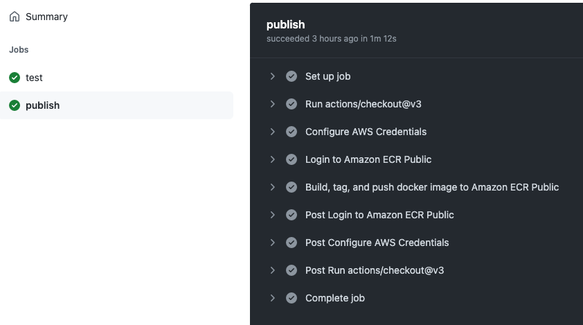

<!DOCTYPE html>


<html lang="en-gb">
  <head>
    <meta charset="utf-8" />
    <meta http-equiv="X-UA-Compatible" content="IE=edge" />
    <title>CYF&#43;</title>
    <meta name="description" content="A free and open source immersive engineering programme. Practical, hands on projects in Go, distributed systems engineering, site reliability engineering, software engineering. Pace, scale, and complexity." />
    <meta name="viewport" content="width=device-width, initial-scale=1" />
    
    <style>
      body,
      html {
        margin: 0;
        padding: 0;
        height: 100%;
        animation: fade-in 0.2s;
      }
      @keyframes fade-in {
        0% {
          opacity: 0;
        }
        100% {
          opacity: 1;
        }
      }
    </style>
     
    <link
      rel="stylesheet"
      href="/bundled.min.f44ec27dd539fe9647de9751483e4bcd.css"
      media="print"
      onload="this.media='all'"
    />
    <noscript>
      <link rel="stylesheet" href="/bundled.min.f44ec27dd539fe9647de9751483e4bcd.css" />
    </noscript>
    <link rel="preconnect" href="https://fonts.googleapis.com" />
    <link rel="preconnect" href="https://fonts.gstatic.com" crossorigin />
    <link
      href="https://fonts.googleapis.com/css2?family=Hanken+Grotesk:wght@300;400;700&family=Major+Mono+Display&display=swap"
      rel="stylesheet"
      media="print"
      onload="this.media='all'"
    />

    <link
      rel="apple-touch-icon"
      sizes="180x180"
      href="/favicons/apple-touch-icon.png"
    />
    <link
      rel="icon"
      type="image/png"
      sizes="32x32"
      href="/favicons/favicon-32x32.png"
    />
    <link
      rel="icon"
      type="image/png"
      sizes="16x16"
      href="/favicons/favicon-16x16.png"
    />
    <link rel="manifest" href="/favicons/site.webmanifest" />
    <link rel="shortcut icon" href="/favicons/favicon.ico" />
    <meta name="apple-mobile-web-app-title" content="CYF+" />
    <meta name="application-name" content="CYF+" />
    <meta name="msapplication-TileColor" content="#9f00a7" />
    <meta
      name="msapplication-config"
      content="/favicons/browserconfig.xml"
    />
    <meta name="theme-color" content="#00ff90" />
  </head>
</html>
<body class="is-light-mode">
  <a class="c-skip-link e-button" id="skip-link" href="#main">Skip to main</a>
  <div class="l-layout">
    <header class="l-layout__header l-header">
  <div class="l-header__nav">
    <h1 class="l-header__heading">
      <a class="l-header__home" href="/">CYF&#43;</a>
    </h1>

    <button
      class="l-header__action e-button e-button--icon js-menu-toggle is-fixed"
    >
      <svg
        xmlns="http://www.w3.org/2000/svg"
        fill="none"
        viewBox="0 0 24 24"
        stroke-width="1.5"
        stroke="currentColor"
        class="e-button__icon l-header__icon"
      >
        <path
          stroke-linecap="round"
          stroke-linejoin="round"
          d="M12 6.75a.75.75 0 110-1.5.75.75 0 010 1.5zM12 12.75a.75.75 0 110-1.5.75.75 0 010 1.5zM12 18.75a.75.75 0 110-1.5.75.75 0 010 1.5z"
        />
      </svg>

      <span class="is-invisible">Open Menu.</span>
    </button>
  </div>
</header>
 <nav
  class="l-layout__menu l-menu"
  aria-label="Main Site Links."
  id="site-menu"
  hidden
  tabindex="0"
>
  <div class="l-menu__container">
    <h2 class="l-menu__heading e-heading__2">
      <a href="/" class="l-menu__home">CYF&#43;</a>
    </h2>
    <button
      class="l-menu__action e-button e-button--icon js-menu-toggle"
      id="close-menu"
    >
      <svg
        xmlns="http://www.w3.org/2000/svg"
        fill="none"
        viewBox="0 0 24 24"
        stroke-width="1.5"
        stroke="currentColor"
        class="e-button__icon"
      >
        <path
          stroke-linecap="round"
          stroke-linejoin="round"
          d="M6 18L18 6M6 6l12 12"
        />
      </svg>

      <span class="is-invisible">Close Menu.</span>
    </button>
    <ul class="l-menu__primary e-list">
      <li class="l-menu__item e-list__item">
        <a class="l-menu__link e-link e-heading__1" href="/about">About</a>
      </li>
      <li class="l-menu__item e-list__item">
        <a class="l-menu__link e-link e-heading__1" href="/versions"
          >Versions</a
        >
      </li>
      <li class="l-menu__item e-list__item">
        <a class="l-menu__link e-link e-heading__1" href="/projects"
          >Projects</a
        >
      </li>
      <li class="l-menu__item e-list__item">
        <a class="l-menu__link e-link e-heading__1" href="/primers">Primers</a>
      </li>
    </ul>

    <div class="l-menu__secondary">
      
      <a class="l-menu__link e-link" href="#skip-link">
        <span class="is-invisible">To top</span>
        <svg
          xmlns="http://www.w3.org/2000/svg"
          fill="none"
          width="48px"
          viewBox="0 0 24 24"
          stroke-width="1.5"
          stroke="currentColor"
          class="l-menu__icon"
        >
          <path
            stroke-linecap="round"
            stroke-linejoin="round"
            d="M3 4.5h14.25M3 9h9.75M3 13.5h5.25m5.25-.75L17.25 9m0 0L21 12.75M17.25 9v12"
          />
        </svg>
      </a>
      
    </div>
  </div>

  
</nav>

    <main id="main" class="l-layout__main l-main" tabindex="0">
      

<article>
  <header class="l-page__header c-page-header">
    <div class="c-page-header__container">
      <div class="c-page-header__breadcrumbs">
        
<nav class="c-breadcrumbs">
  <ol class="c-breadcrumbs__list">
    <li class="c-breadcrumbs__item">
      <a class="c-breadcrumbs__link" href="/projects/">Projects</a>
    </li>
  </ol>
</nav>


      </div>
      <h1
        class="c-page-header__title e-heading__1 is-invisible"
      >
        Docker &amp; Cloud Deployment
      </h1>
         
      <a
        class="c-page-header__edit e-heading__5 e-link is-none--lt-container"
        href="https://github.com/CodeYourFuture/immersive-go-course/tree/main/projects/docker-cloud/README.md"
        >Edit on Github</a
      >
       

  

  


<h2 class="c-lastmod c-page-header__lastmod">
  .Lastmod
  <a href="https://github.com/CodeYourFuture/immersive-go-course/tree/main/docker-cloud">
    <time datetime="2023-01-08T15:59:51Z">2023-01-08T15:59:51Z</time>
  </a>
</h2>

  
      <section class="c-page-header__toc c-toc" id="toc">
        <nav id="TableOfContents">
  <ol>
    <li><a href="#learning-objectives">Learning objectives:</a></li>
    <li><a href="#project">Project</a>
      <ol>
        <li><a href="#motivation">Motivation</a></li>
      </ol>
    </li>
    <li><a href="#background">Background</a>
      <ol>
        <li><a href="#docker">Docker</a></li>
        <li><a href="#cloud-hosting-in-aws">Cloud hosting in AWS</a></li>
      </ol>
    </li>
    <li><a href="#building--dockerising-server">Building &amp; Dockerising server</a></li>
    <li><a href="#server">Server</a>
      <ol>
        <li><a href="#dockerise">Dockerise</a></li>
        <li><a href="#tests">Tests</a></li>
      </ol>
    </li>
    <li><a href="#cicd">CI/CD</a>
      <ol>
        <li><a href="#github-action-running-tests">Github Action: running tests</a></li>
        <li><a href="#github-action-publish-image">Github Action: publish image</a></li>
      </ol>
    </li>
    <li><a href="#running-on-ecs">Running on ECS</a>
      <ol>
        <li><a href="#deploying-changes">Deploying changes</a></li>
      </ol>
    </li>
  </ol>
</nav>
      </section>
      
    </div>
  </header>

  <section class="l-page__main c-copy"><p>In this project, you&rsquo;ll build a simple Go server application and Dockerise it to run within a container. You&rsquo;ll write tests that run against the container, and then build GitHub actions to automate continuous testing and release of the application. You&rsquo;ll then run it in the cloud by pushing the container image to Amazon AWS Elastic Container Repository, and then launch it in Amazon AWS Elastic Container Service using the user interface.</p>
<blockquote>
<p>⚠️ This project requires you to have access to an Amazon AWS account, with permissions to configure ECS, ECR, Fargate, IAM, and Elastic Load Balancing. Ask on CYF Slack for help with that.</p>
</blockquote>
<blockquote>
<p>⚠️ You need a GitHub repo to complete this because we&rsquo;ll be using <a href="https://docs.github.com/en/actions">GitHub Actions</a>. If you are not already working in your own fork of the <code>immersive-go-course</code> repository, now would be a good time!</p>
</blockquote>
<h2 id="learning-objectives">Learning objectives:</h2>
<ul>
<li>Set up Docker locally</li>
<li><code>Dockerfile</code> syntax &amp; how to containerise an application</li>
<li>Run applications locally using Docker</li>
<li>Push container images to a repository (<a href="https://aws.amazon.com/ecr/">ECR</a>)</li>
<li>Deploy images to Elastic Cloud resources using Elastic Container Service</li>
<li>Destroy cloud resources to mitigate cost</li>
</ul>
<p>Timebox: 2 days</p>
<h2 id="project">Project</h2>
<p>This project will require us to pull together information from several different guides to get an application developed locally to run in the cloud. This project will give you experience of building and deploying a real applications. Our focus here is <strong>not</strong> on the Go code, but on the infrastructure around it.</p>
<h3 id="motivation">Motivation</h3>
<p>We&rsquo;re going to build a simple Go server, and then <em>containerise</em> it.</p>
<blockquote>
<p>In this project, we&rsquo;ll use the terms containerise and dockerise interchangeably to mean the same thing: making an application run in a container using Docker.</p>
</blockquote>
<p>A <strong>container</strong> is a kind of <a href="https://en.m.wikipedia.org/wiki/Sandbox_(computer_security)">sandboxed</a> process on a computer that is isolated from all other processes, unless specifically allowed.</p>
<p>Containers have an isolated filesystem. This filesystem is provided by a container <strong>image</strong>. Since the image contains the container’s filesystem, it must contain everything needed to run an application: all dependencies, configurations, scripts, binaries, &amp; other files or data. The image also contains other configuration for the container, such as environment variables, a default command to run, and other metadata.</p>
<p>By combining images and containers, we can package whole applications in a way that is transferrable (we can create them completely separately from running them) and highly reproducible. Both of these are very important in a production environment.</p>
<p>The isolation and security allows us to run many containers simultaneously on a host computer. Containers are lightweight and contain everything needed to run the application, so we do not need to rely on what is currently installed on the host (and don&rsquo;t need to worry that it may change between deployments). We can easily share containers while we work, and be sure that everyone we share with gets the same container that works in the same way.</p>
<p>This makes containers &amp; images a very desirable way to build and deploy applications. It&rsquo;s the way we&rsquo;ll work in most of the future projects.</p>
<p>To summarize, a container:</p>
<ul>
<li>is a runnable instance of an image. We can create, start, stop, move, or delete containers</li>
<li>can be run on local machines, virtual machines or deployed to the cloud</li>
<li>is portable (can be run on any OS)</li>
<li>is isolated from other containers and runs its own software, binaries, and configurations</li>
</ul>
<p>For even more on containers, you can read Julia Evan&rsquo;s fantastic guide to <a href="https://jvns.ca/blog/2016/10/10/what-even-is-a-container/">What even is a container?</a>.</p>
<h2 id="background">Background</h2>
<h3 id="docker">Docker</h3>
<p>Docker is an open platform for developing, deploying, and running applications, based around containers and images. Docker provides tooling and a platform to manage the lifecycle of our containers:</p>
<ul>
<li>We develop the application and its supporting components using containers</li>
<li>The container becomes the unit for distributing and testing the application.</li>
<li>When ready, we deploy the application onto a production environment that will handle real workloads.</li>
</ul>
<p>This works the same whether the production environment is a local data center, a cloud provider, or a hybrid of the two. Read <a href="https://docs.docker.com/get-started/overview/">this guide to get an overview of Docker</a>.</p>
<p>To build hands-on familiarity with Docker, complete parts 1, 2 and 3 of <a href="https://docs.docker.com/get-started/">this tutorial</a>, after which you should know about:</p>
<ul>
<li>Running applications with docker: <code>docker run -dp 80:80 docker/getting-started</code></li>
<li>Containers and images: process &amp; filesystem isolation</li>
<li><code>Dockerfile</code>: a text-based script of instructions that is used to create a container image</li>
<li>Starting, managing processes and images: <code>docker ps</code> and <code>docker rm -f</code>s</li>
</ul>
<p>Next work through the <a href="https://docs.docker.com/language/golang/">Go Docker tutorial</a>, after which you should know about:</p>
<ul>
<li>Dockerising a go application</li>
<li>Starting and stopping containers</li>
<li>Volumes &amp; networking between docker containers</li>
<li>Basics of docker-compose and CockroachDB</li>
<li>GitHub actions for pushing the image to Docker Hub</li>
</ul>
<p>Spend some time on these steps, and feel free to complete other tutorials too. It&rsquo;s very important to grasp the core ideas of containers, images and docker:</p>
<ul>
<li>Docker is a set of tools for managing containers and images</li>
<li>Images are frozen file systems that hold everything a container needs to run</li>
<li>Containers are the running application, based on an image</li>
</ul>
<h3 id="cloud-hosting-in-aws">Cloud hosting in AWS</h3>
<p>We&rsquo;re going to host our application in the cloud, specifically in Amazon Web Services (AWS). AWS is a large suite of products for running technology in the cloud.</p>
<p>The set of AWS products we&rsquo;re going to interact with directly are:</p>
<ul>
<li>Elastic Container Repository (ECR): store images that can later be run as containers</li>
<li>Elastic Container Service (ECS): run containers, including all the infrastructure needed to make them accessible to the internet</li>
<li>Identity &amp; Access Management (IAM): manage security, identity and access within AWS</li>
</ul>
<p>To get familiar with ECS, run through the <a href="https://aws.amazon.com/getting-started/hands-on/deploy-docker-containers/">AWS tutorial</a>, after which you should know about:</p>
<ul>
<li>Container &amp; task: like a blueprint for our application</li>
<li>Service &amp; load balancing: launches and maintains copies of the task definition in a cluster, and directs real traffic</li>
<li>Cluster: compute resources used to run the service &amp; load balancing</li>
</ul>
<h2 id="building--dockerising-server">Building &amp; Dockerising server</h2>
<p>The rest of this project will cover putting this all together to run an application that we&rsquo;ve written on ECS. The steps will be:</p>
<ul>
<li>Build a simple Go server</li>
<li>Dockerise it to run locally within a container</li>
<li>Write tests that run against the docker container</li>
<li>Build GitHub actions to automate CI/CD</li>
<li>Push the image to ECR</li>
<li>Launch it in ECS using the UI</li>
</ul>
<p>Make sure to commit code as you, work with clear commit messages. We are going to work in a tight loop with GitHub — pushing code and testing it — so <a href="https://betterprogramming.pub/six-rules-for-good-git-hygiene-5006cf9e9e2">good Git hygiene</a> is important.</p>
<h2 id="server">Server</h2>
<p>Write a simple server in Go. It should have this behaviour when you <code>go run</code> it:</p>
<div class="highlight"><pre tabindex="0" style="color:#f8f8f2;background-color:#272822;-moz-tab-size:4;-o-tab-size:4;tab-size:4;"><code class="language-console" data-lang="console"><span style="display:flex;"><span>&gt; curl localhost:8090
</span></span><span style="display:flex;"><span>Hello, world.
</span></span><span style="display:flex;"><span><span style="color:#960050;background-color:#1e0010">
</span></span></span><span style="display:flex;"><span><span style="color:#960050;background-color:#1e0010"></span>&gt; curl localhost:8090/ping
</span></span><span style="display:flex;"><span>pong
</span></span></code></pre></div><p>Make sure that the port is configurable with an environment variable <code>HTTP_PORT</code>, and defaults to port <code>80</code>.</p>
<h3 id="dockerise">Dockerise</h3>
<p>Write a <code>Dockerfile</code> for the application.</p>
<p>It should build &amp; run like this:</p>
<div class="highlight"><pre tabindex="0" style="color:#f8f8f2;background-color:#272822;-moz-tab-size:4;-o-tab-size:4;tab-size:4;"><code class="language-console" data-lang="console"><span style="display:flex;"><span>&gt; docker build . -t docker-cloud
</span></span><span style="display:flex;"><span>[+] Building 22.6s (15/15) FINISHED
</span></span><span style="display:flex;"><span>...
</span></span><span style="display:flex;"><span><span style="color:#960050;background-color:#1e0010">
</span></span></span><span style="display:flex;"><span><span style="color:#960050;background-color:#1e0010"></span>&gt; docker run -dp 8090:80 docker-cloud
</span></span><span style="display:flex;"><span>306cf309f3970d5380cd07c3a54aead7ee8cf4f6726b752fecaec39e40da69f5
</span></span><span style="display:flex;"><span><span style="color:#960050;background-color:#1e0010">
</span></span></span><span style="display:flex;"><span><span style="color:#960050;background-color:#1e0010"></span>&gt; curl localhost:8090
</span></span><span style="display:flex;"><span>Hello, world.
</span></span><span style="display:flex;"><span><span style="color:#960050;background-color:#1e0010">
</span></span></span><span style="display:flex;"><span><span style="color:#960050;background-color:#1e0010"></span>&gt; curl localhost:8090/ping
</span></span><span style="display:flex;"><span>pong
</span></span></code></pre></div><p>Optionally, make this a bit more complete and reproducible by including a multi-stage build.</p>
<h3 id="tests">Tests</h3>
<p>Write some simple tests for your server. For writing tests, use <a href="https://github.com/ory/dockertest">dockertest</a>.</p>
<p>The principle of <code>dockertest</code> is to test against real running services, end to end, in containers. The advantage is that these services can be destroyed after testing and recreated from scratch, so that the tests are highly reproducible.</p>
<p>Following <a href="https://github.com/ory/dockertest">docs here</a> and <a href="https://github.com/olliefr/docker-gs-ping">example here</a>, write some tests.</p>
<p>Make sure to <code>COPY go.sum ./</code> in the &ldquo;build&rdquo; portion of your <code>Dockerfile</code>. <a href="https://golangbyexample.com/go-mod-sum-module/">Read this guide to understand why</a>.</p>
<h2 id="cicd">CI/CD</h2>
<p>Over time, software engineers have developed a set good practices for building software that is used in production for real workloads. One key component of this is called Continuous Integration &amp; Continuous Deployment, referred to as CI/CD. We&rsquo;re going to focus on the &ldquo;CI&rdquo; component of this, which means:</p>
<ul>
<li>Working with version control (Git)</li>
<li>Using automated checks on the code added to Git (e.g. running tests)</li>
<li>Automating the steps required to &ldquo;build&rdquo; a version of the application that could be deployed to production (e.g. building a Docker image and pushing it to a shared location)</li>
</ul>
<p>This automation runs in the cloud — <em>not</em> on developer laptops — so that it is highly reproducible and the same for whoever writes the the code. Each step in the flow depends on the last one. The idea is that, should the tests fail, the code will not be built or pushed to the repository, so it&rsquo;s harder to push buggy code to production. In a CI/CD world, code is <strong><em>never</em></strong> pushed to production from a laptop.</p>
<h3 id="github-action-running-tests">Github Action: running tests</h3>
<p>The system we&rsquo;ll use for CI testing and image creation is <a href="https://docs.github.com/en/actions">GitHub Actions</a>.</p>
<p>Follow <a href="https://docs.github.com/en/actions/automating-builds-and-tests/building-and-testing-go">this guide on GitHub</a> to get a GitHub action testing the code. We&rsquo;ll be adding a single file to the <code>.github/workflows</code> directory of the repo.</p>
<p>Pay attention to the following:</p>
<div class="highlight"><pre tabindex="0" style="color:#f8f8f2;background-color:#272822;-moz-tab-size:4;-o-tab-size:4;tab-size:4;"><code class="language-yml" data-lang="yml"><span style="display:flex;"><span><span style="color:#75715e"># Make sure that the working directory for the tests is correct</span>
</span></span><span style="display:flex;"><span><span style="color:#f92672">defaults</span>:
</span></span><span style="display:flex;"><span>  <span style="color:#f92672">run</span>:
</span></span><span style="display:flex;"><span>    <span style="color:#f92672">working-directory</span>: <span style="color:#ae81ff">docker-cloud</span>
</span></span></code></pre></div><div class="highlight"><pre tabindex="0" style="color:#f8f8f2;background-color:#272822;-moz-tab-size:4;-o-tab-size:4;tab-size:4;"><code class="language-yml" data-lang="yml"><span style="display:flex;"><span><span style="color:#75715e"># Use the right go version file and dependency path</span>
</span></span><span style="display:flex;"><span><span style="color:#75715e"># Note that these are *not* subject to the working-directory defaults supplied above</span>
</span></span><span style="display:flex;"><span>- <span style="color:#f92672">name</span>: <span style="color:#ae81ff">Set up Go</span>
</span></span><span style="display:flex;"><span>  <span style="color:#f92672">uses</span>: <span style="color:#ae81ff">actions/setup-go@v3</span>
</span></span><span style="display:flex;"><span>  <span style="color:#f92672">with</span>:
</span></span><span style="display:flex;"><span>    <span style="color:#f92672">go-version-file</span>: <span style="color:#e6db74">&#34;docker-cloud/go.mod&#34;</span>
</span></span><span style="display:flex;"><span>    <span style="color:#f92672">cache-dependency-path</span>: <span style="color:#e6db74">&#34;docker-cloud/go.sum&#34;</span>
</span></span><span style="display:flex;"><span>    <span style="color:#f92672">cache</span>: <span style="color:#66d9ef">true</span>
</span></span></code></pre></div><h3 id="github-action-publish-image">Github Action: publish image</h3>
<p>Next, we&rsquo;re going build an action that creates and pushes the image to AWS Elastic Container Registry.</p>
<p>The end result will work something like this, including the steps that follow to deploy the container to ECS:</p>
<p></p>
<ol>
<li>We (the developers) push code to GitHub</li>
<li>GitHub triggers Actions that run against our code</li>
<li>After running tests, an Action creates and publishes a Docker image to the Elastic Container Registry, identified by the <a href="https://git-scm.com/book/en/v2/Git-Basics-Viewing-the-Commit-History">commit ID</a></li>
<li>Via the ECS UI, we will deploy this image as a container (which will also create a task, service, cluster and load balancer, amongst other things)</li>
<li>Finally, our server will be able to receive HTTP requests from anyone on the internet!</li>
</ol>
<p>We&rsquo;ve already managed steps 1 and 2.</p>
<p>Step three requires us to do the following:</p>
<ul>
<li>We need a repository on ECR where we&rsquo;ll publish our images. A repository is a collection of images. Ours will be <strong>public</strong>. We&rsquo;ll create this via the ECR user interface.</li>
<li>We need to <strong>authorise</strong> GitHub to push images to our repository. We don&rsquo;t want <em>anyone</em> to be able to push images. Just us. We&rsquo;ll do this by creating an Identify Provider, two Policies, and a Role, plus making use of some standard <a href="https://github.com/aws-actions">AWS GitHub actions</a>.</li>
</ul>
<p>Here are the steps: figuring out the gaps is up to you. The <a href="https://benoitboure.com/securely-access-your-aws-resources-from-github-actions">guide here</a> may be helpful to you, as well as <a href="https://docs.aws.amazon.com/IAM/latest/UserGuide/access_policies_create-console.html">this guide on creating policies</a>.</p>
<ol>
<li><a href="https://eu-west-1.console.aws.amazon.com/ecr/repositories?region=eu-west-1">Create a repository</a>. Make sure it&rsquo;s public.
<br>Make a note of the URI of the registry — something like <code>public.ecr.aws/w0k4j6h5/immersive-go-course/docker-cloud</code>. The alias (<code>w0k4j6h5</code>) and name <code>immersive-go-course/docker-cloud</code> will be useful later.</li>
<li>Via the IAM dashboard (use the AWS navigation to find this):
<ol>
<li>Add a new OpenID Connect Identify Provider
<ul>
<li>Provider URL: <code>https://token.actions.githubusercontent.com</code> (Don&rsquo;t forget to click Get Thumbprint)</li>
<li>Audience: <code>sts.amazonaws.com</code></li>
</ul>
</li>
<li>Create two Policies, which will allow the Role to push Docker images:
<ol>
<li>Call the first Policy <code>GetAuthorizationToken</code>, and set it up to:
<ul>
<li><code>GetAuthorizationToken</code> against the <code>Elastic Container Registry Public</code> service</li>
<li><code>GetServiceBearerToken</code> against the <code>STS</code> service</li>
</ul>
</li>
<li>Call the second Policy <code>AllowPush</code>, and set it up with the following against the <code>Elastic Container Registry Public</code> service:
<ul>
<li>Read <code>BatchCheckLayerAvailability</code></li>
<li>Write <code>CompleteLayerUpload</code>, <code>InitiateLayerUpload</code>, <code>PutImage</code>, <code>UploadLayerPart</code></li>
</ul>
</li>
</ol>
</li>
<li>Create a Role called <code>GitHubActionECRPublicPushImage</code>:
<ul>
<li>Chose Web Identity, select the Identity provider you created in the previous step, and its audience</li>
<li>Assign the <code>GetAuthorizationToken</code> and <code>AllowPush</code> policies to the Role</li>
</ul>
</li>
<li>After you&rsquo;ve created the role, edit it. In the Trust Relationships tab, update the <code>&quot;Condition&quot;</code> block so that it references <strong>your repository</strong>:
<div class="highlight"><pre tabindex="0" style="color:#f8f8f2;background-color:#272822;-moz-tab-size:4;-o-tab-size:4;tab-size:4;"><code class="language-json" data-lang="json"><span style="display:flex;"><span><span style="color:#e6db74">&#34;Condition&#34;</span><span style="color:#960050;background-color:#1e0010">:</span> {
</span></span><span style="display:flex;"><span>    <span style="color:#f92672">&#34;StringEquals&#34;</span>: {
</span></span><span style="display:flex;"><span>        <span style="color:#f92672">&#34;token.actions.githubusercontent.com:aud&#34;</span>: <span style="color:#e6db74">&#34;sts.amazonaws.com&#34;</span>
</span></span><span style="display:flex;"><span>    },
</span></span><span style="display:flex;"><span>    <span style="color:#f92672">&#34;StringLike&#34;</span>: {
</span></span><span style="display:flex;"><span>        <span style="color:#f92672">&#34;token.actions.githubusercontent.com:sub&#34;</span>: <span style="color:#e6db74">&#34;repo:[YOUR_GITHUB_USERNAME]/[YOUR_GITHUB_REPO]:*&#34;</span>
</span></span><span style="display:flex;"><span>    }
</span></span><span style="display:flex;"><span>}
</span></span></code></pre></div></li>
</ol>
</li>
</ol>
<p>We&rsquo;re now ready to create the GitHub Actions. We&rsquo;re going to use two actions, in order:</p>
<ol>
<li><a href="https://github.com/aws-actions/configure-aws-credentials">aws-actions/configure-aws-credentials</a> — this sets up environment variables so that subsequent actions can authenticate with AWS</li>
<li><a href="https://github.com/aws-actions/amazon-ecr-login">aws-actions/amazon-ecr-login</a> — this authenticates the Docker client (<code>docker</code> commands) with the AWS container registry</li>
</ol>
<p>A couple of things that we shouldn&rsquo;t miss&hellip;</p>
<p>Make sure that the action has a <code>write</code> token:</p>
<div class="highlight"><pre tabindex="0" style="color:#f8f8f2;background-color:#272822;-moz-tab-size:4;-o-tab-size:4;tab-size:4;"><code class="language-yml" data-lang="yml"><span style="display:flex;"><span><span style="color:#f92672">permissions</span>:
</span></span><span style="display:flex;"><span>  <span style="color:#f92672">id-token</span>: <span style="color:#ae81ff">write</span>
</span></span></code></pre></div><p>And that we have correctly copied the Amazon Resource Name (ARN) for the Role:</p>
<div class="highlight"><pre tabindex="0" style="color:#f8f8f2;background-color:#272822;-moz-tab-size:4;-o-tab-size:4;tab-size:4;"><code class="language-yml" data-lang="yml"><span style="display:flex;"><span>- <span style="color:#f92672">name</span>: <span style="color:#ae81ff">configure aws credentials</span>
</span></span><span style="display:flex;"><span>  <span style="color:#f92672">uses</span>: <span style="color:#ae81ff">aws-actions/configure-aws-credentials@v1</span>
</span></span><span style="display:flex;"><span>  <span style="color:#f92672">with</span>:
</span></span><span style="display:flex;"><span>    <span style="color:#f92672">role-to-assume</span>: <span style="color:#ae81ff">arn:aws:iam::1234567890:role/your-role-arn</span>
</span></span></code></pre></div><p>Finally, we can push the image to ECR:</p>
<div class="highlight"><pre tabindex="0" style="color:#f8f8f2;background-color:#272822;-moz-tab-size:4;-o-tab-size:4;tab-size:4;"><code class="language-yml" data-lang="yml"><span style="display:flex;"><span>- <span style="color:#f92672">name</span>: <span style="color:#ae81ff">Build, tag, and push docker image to Amazon ECR Public</span>
</span></span><span style="display:flex;"><span>  <span style="color:#f92672">env</span>:
</span></span><span style="display:flex;"><span>    <span style="color:#f92672">REGISTRY</span>: <span style="color:#ae81ff">${{ steps.login-ecr-public.outputs.registry }}</span>
</span></span><span style="display:flex;"><span>    <span style="color:#f92672">REGISTRY_ALIAS</span>: <span style="color:#ae81ff">YOUR_ALIAS</span>
</span></span><span style="display:flex;"><span>    <span style="color:#f92672">REPOSITORY</span>: <span style="color:#ae81ff">YOUR_REPOSITORY</span>
</span></span><span style="display:flex;"><span>    <span style="color:#f92672">IMAGE_TAG</span>: <span style="color:#ae81ff">${{ github.sha }}</span>
</span></span><span style="display:flex;"><span>  <span style="color:#f92672">run</span>: |<span style="color:#e6db74">
</span></span></span><span style="display:flex;"><span><span style="color:#e6db74">    docker build -t $REGISTRY/$REGISTRY_ALIAS/$REPOSITORY:$IMAGE_TAG .
</span></span></span><span style="display:flex;"><span><span style="color:#e6db74">    docker push $REGISTRY/$REGISTRY_ALIAS/$REPOSITORY:$IMAGE_TAG</span>    
</span></span></code></pre></div><p>The <code>docker push</code> command uses the URL of the registry (<code>public.ecr.aws</code>) to figure out which credentials to use, so we don&rsquo;t have to explicitly refer to the AWS configuration &amp; login steps.</p>
<p>Once this action is written, we can add commit it and push to GitHub to test it out. The logs from the GitHub action will look something like this:</p>
<p></p>
<p>If it&rsquo;s worked, our public repository with a published image will show up <a href="https://console.aws.amazon.com/ecr/repositories">on the Amazon console</a>.</p>
<h2 id="running-on-ecs">Running on ECS</h2>
<p></p>
<p>Lastly, run the server on Amazon Elastic Container Service, enabling step 4 and 5 in the architecture diagram. The guide we went through above will give us most of what we need. Here&rsquo;s some things to watch out for:</p>
<ul>
<li>We need to set up a <strong>custom</strong> container definition</li>
<li>The <code>Image</code> field will use the URL from the ECR repository, under <code>Image URI</code></li>
<li>We need to add a port mapping, using whichever port the service runs under <em>inside</em> the container (likely <code>80</code>)</li>
<li>Edit the <code>Task definition name</code> doesn&rsquo;t need to change, but it&rsquo;s good to give it a recognisable, meaningful name. <a href="https://docs.aws.amazon.com/AmazonECS/latest/developerguide/task_definitions.html">Read more about task definitions here</a></li>
<li>Make sure to create an Application Load Balancer</li>
</ul>
<p>Follow the guide to find the running URL for the server. If it&rsquo;s working, visiting <code>/ping</code> should give back <code>pong</code>. Nice!</p>
<h3 id="deploying-changes">Deploying changes</h3>
<p>Deploying once is great, but in reality code will change over time. Let&rsquo;s make some changes and get them deployed using our GitHub Actions CI process:</p>
<ul>
<li>Change the server code (<code>pong</code> to <code>Hello!</code> for example)</li>
<li>Commit &amp; use the full CI workflow to test and publish a version of the Docker image to ECR</li>
<li>Follow this guide to create an <a href="https://docs.aws.amazon.com/AmazonECS/latest/developerguide/update-task-definition.html">updated task definition</a> which points to the new image</li>
<li>Follow <a href="https://docs.aws.amazon.com/AmazonECS/latest/developerguide/update-service-console-v1.html">this guide for updating a service</a> to release the changes. We only need to change the task definition to refer to the new revision, with the new image!</li>
</ul>
<p>And&hellip; done! Well done, this was a steep learning curve.</p>
</section>

  
<footer class="c-page-footer c-copy">
  <h4 class="c-page-footer__section">
    <a
      class="c-page-footer__section-link e-link"
      href="/projects"
      >projects</a
    >
  </h4>
   
  <nav class="c-page-footer__section-nav">
    <a
      class="e-button e-button--icon c-page-footer__edit"
      href="https://github.com/CodeYourFuture/immersive-go-course/tree/main/projects/docker-cloud/README.md"
      ><svg
        role="presentation"
        xmlns="http://www.w3.org/2000/svg"
        fill="none"
        viewBox="0 0 24 24"
        stroke-width="1.5"
        stroke="currentColor"
        class="e-button__icon"
      >
        <path
          stroke-linecap="round"
          stroke-linejoin="round"
          d="M16.862 4.487l1.687-1.688a1.875 1.875 0 112.652 2.652L6.832 19.82a4.5 4.5 0 01-1.897 1.13l-2.685.8.8-2.685a4.5 4.5 0 011.13-1.897L16.863 4.487zm0 0L19.5 7.125"
        />
      </svg>
      <span class="is-invisible">Edit this page on GitHub</span></a
    >
    
    
  </nav>
</footer>


</article>


    </main><footer class="l-layout__footer l-footer">
  <a
    class="l-footer__github e-button e-button--icon"
    href="https://github.com/CodeYourFuture/immersive-go-course/"
  >
    <svg
      focusable="false"
      class="e-button__icon"
      role="presentation"
      viewbox="0 0 98 96"
      xmlns="http://www.w3.org/2000/svg"
    >
      <path
        fill-rule="evenodd"
        clip-rule="evenodd"
        d="M48.854 0C21.839 0 0 22 0 49.217c0 21.756 13.993 40.172 33.405 46.69 2.427.49 3.316-1.059 3.316-2.362 0-1.141-.08-5.052-.08-9.127-13.59 2.934-16.42-5.867-16.42-5.867-2.184-5.704-5.42-7.17-5.42-7.17-4.448-3.015.324-3.015.324-3.015 4.934.326 7.523 5.052 7.523 5.052 4.367 7.496 11.404 5.378 14.235 4.074.404-3.178 1.699-5.378 3.074-6.6-10.839-1.141-22.243-5.378-22.243-24.283 0-5.378 1.94-9.778 5.014-13.2-.485-1.222-2.184-6.275.486-13.038 0 0 4.125-1.304 13.426 5.052a46.97 46.97 0 0 1 12.214-1.63c4.125 0 8.33.571 12.213 1.63 9.302-6.356 13.427-5.052 13.427-5.052 2.67 6.763.97 11.816.485 13.038 3.155 3.422 5.015 7.822 5.015 13.2 0 18.905-11.404 23.06-22.324 24.283 1.78 1.548 3.316 4.481 3.316 9.126 0 6.6-.08 11.897-.08 13.526 0 1.304.89 2.853 3.316 2.364 19.412-6.52 33.405-24.935 33.405-46.691C97.707 22 75.788 0 48.854 0z"
        fill="currentColor"
      />
    </svg>
    <span class="is-invisible">Find us on GitHub</span>
  </a>
  <p class="l-footer__impressum e-heading__6">
    This
    <a href="https://github.com/CodeYourFuture/immersive-go-course/"
      >free and open source engineering programme</a
    >
    is a project of
    <a href="https://codeyourfuture.io">Code Your Future</a>
    <br />
    This work is licensed under a Creative Commons Attribution-ShareAlike 4.0
    International License.
  </p>
  <button
    id="mode-toggle"
    class="e__button--toggle e-button--icon l-footer__mode"
  >
    <svg
      xmlns="http://www.w3.org/2000/svg"
      fill="none"
      viewBox="0 0 24 24"
      stroke-width="1.5"
      stroke="currentColor"
      class="e-icon e__button__icon e-icon--moon"
    >
      <path
        stroke-linecap="round"
        stroke-linejoin="round"
        d="M21.752 15.002A9.718 9.718 0 0118 15.75c-5.385 0-9.75-4.365-9.75-9.75 0-1.33.266-2.597.748-3.752A9.753 9.753 0 003 11.25C3 16.635 7.365 21 12.75 21a9.753 9.753 0 009.002-5.998z"
      />
    </svg>

    <span class="is-invisible">Toggle between light and dark mode</span>
  </button>
</footer>

  

<script>
  function randomBG() {
    const style = document.createElement("style");
    style.textContent = `body, html {background-image:url("\/pictures/svgs/neons/nnneon.svg"),url("\/pictures/svgs/quads/qqquad-5.svg"),radial-gradient(circle,var(--theme-color--paper) 0%,var(--theme-color--block) 50%,var(--theme-color--paper) 100%);
      background-size: cover;
    }`;

    document.head.appendChild(style);
  }

  window.addEventListener("load", randomBG);
</script>


<script src="/scripts/app.min.js" defer></script>


</div>
</body>
